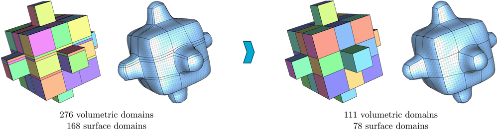

Polycube Simplification for Coarse Layouts
of Surfaces and Volumes
Gianmarco Cherchi, Marco Livesu, Riccardo Scateni
Computer Graphics Forum 35(5), 11-20, 2016

ABSTRACT
Representing digital objects with structured meshes that embed a coarse block decomposition
is a relevant problem in applications like computer animation, physically-based simulation
and Computer Aided Design (CAD). One of the key ingredients to produce coarse block structures
is to achieve a good alignment between the mesh singularities (i.e., the corners of each block).
In this paper we improve on the polycube-based meshing pipeline to produce both surface and
volumetric coarse block-structured meshes of general shapes. To this aim we add a new step
in the pipeline. Our goal is to optimize the positions of the polycube corners to produce as
coarse as possible base complexes. We rely on re-mapping the positions of the corners on an
integer grid and then using integer numerical programming to reach the optimal. To the best
of our knowledge this is the first attempt to solve the singularity misalignment problem directly
in polycube space. Previous methods for polycube generation did not specifically address this
issue. Our corner optimization strategy is efficient and requires a negligible extra running
time for the meshing pipeline. In the paper we show that our optimized polycubes produce
coarser block structured surface and volumetric meshes if compared with previous approaches.
They also induce higher quality hexahedral meshes and are better suited for spline fitting
because they reduce the number of splines necessary to cover the domain, thus improving both
the efficiency and the overall level of smoothness throughout the volume.
DOWNLOADS


BibTex
@article{CLS16,
title = {Polycube Simplification for Coarse Layouts of Surfaces and Volumes},
author = {Cherchi, Gianmarco and Livesu, Marco and Scateni, Riccardo},
journal = {Computer Graphics Forum},
volume = {35},
number = {5},
pages = {11--20},
year = {2016},
ISSN = {1467-8659},
DOI = {10.1111/cgf.12959}}